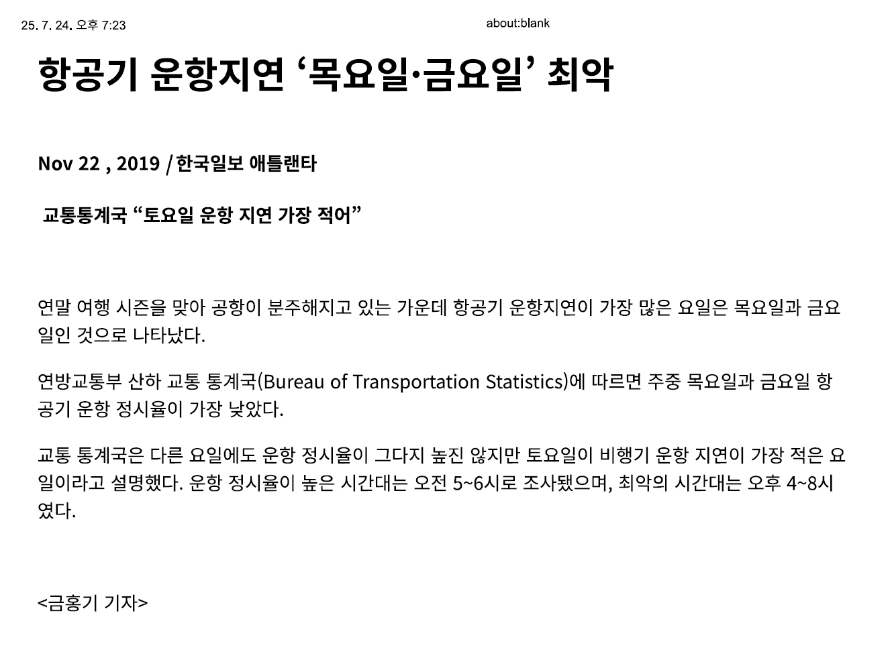
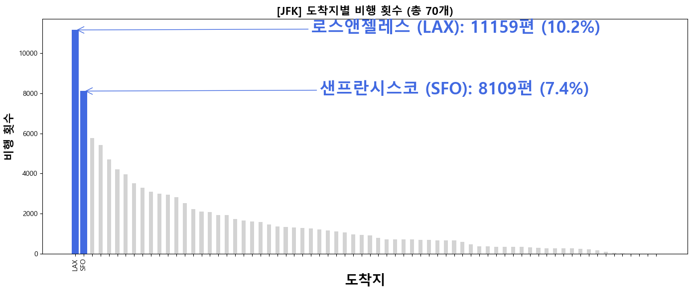
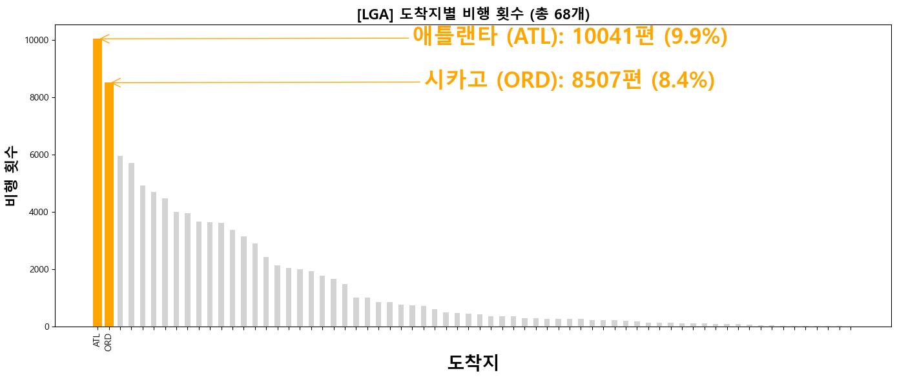
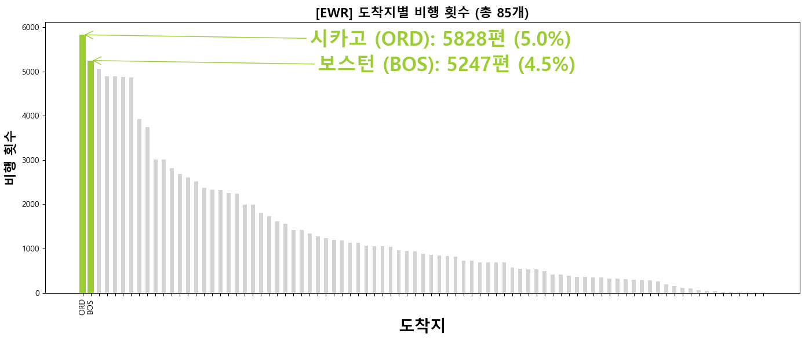

정시성을 최우선으로
고려한 항공편 추천
정시율 및 지연 패턴 분석 (요일, 시간대, 항공사)
도호현 강희준 김민지 박우림 안형엽
목차
분석 배경
데이터 전처리
요일별/시간대별/항공사별 정시율
공항별 인기 노선 선정
노선별 정시율 분석
결론
분석 배경
• 최근 고객들로부터 “비행기 지연으로 현지 일정이 차질을 빚었다”, “연결 교통편을 놓쳤다”, “출장 시간에 맞춰 도착하지 못했다” 등의 불만이 반복적으로 접수되고 있습니다.
• 특히 단체 여행객, VIP, 출장 고객 등 시간에 민감한 고객층에게 항공편의 정시성은 전체 일정 만족도와 여행사의 신뢰도에 직접적인 영향을 미칩니다.
• 이에 따라, 여행 상품 기획 단계에서부터 노선별 지연 가능성을 고려한 항공사, 요일, 시간대 기반의 정시성 분석이 필요하다는 내부 요구가 커지고 있습니다.
[뉴스 기사]
데이터 전처리
파생변수 생성
시간대 분류 및 특징
항공교통서비스 보고서 요약
‘2021 항공교통서비스 보고서’에는 ’23년 새로운 지연운항 기준 도입을 위하여 기존 활주로의 이·착륙을 기준으로 측정해오던 지연 기준을 게이트 출발·도착 기준으로 변경하여 인천공항의 지연율 시범조사한 결과를 수록하였다. 향후 다른 공항까지 조사를 확대할 계획이다.
• 활주로 이륙·착륙 기준은
• 국내선: 30분 초과
• 국제선: 60분 초과 시 지연으로 측정
• 게이트 출발·도착 기준:
• 국내선·국제선 모두 15분 초과 시 지연으로 측정
※ 15분 초과의 지연만 간주함
표. 시간대 분류 및 주요 특징
| 시간대 | 특징 |
|---|---|
| 00:00-05:00 | 심야 |
| 05:00-08:00 | 이른 아침 |
| 08:00-11:00 | 아침 러시 |
| 11:00-14:00 | 점심 이후 |
| 14:00-17:00 | 오후 |
| 17:00-20:00 | 저녁 러시 |
| 20:00-24:00 | 야간 |
[운항 정시율]

운항 정시율
운항 정시율

공항별 인기 노선 TOP2
공항별 인기 노선 TOP2
공항별 인기 노선 TOP2
JFK→LAX 정시 도착률
결론
import pandas as pd import nycflights13 as flights import numpy as np import matplotlib.pyplot as plt import seaborn as sns
def change(index): flights_data = flights.flights
flights_data.head()
flights_data.info()
flights_data.isna().sum() # 결측치 확인
flights_data = flights_data.dropna() # 결측치 삭제
flights_data.info()
flights_data['is_delayed'] = flights_data['arr_delay'] > 15 # 지연시간 15분 초과를 지연으로 간주
flights_data['is_delayed']
# 계절 변수 생성
conditions = [
flights_data['month'].between(3, 5),
flights_data['month'].between(6, 8),
flights_data['month'].between(9, 11),
(flights_data['month'] == 12) | (flights_data['month'] <= 2)
]
choices = [1, 2, 3, 4]
flights_data['season'] = np.select(conditions, choices)
flights_data['season'].unique()
# 시간대 변수 생성
conditions = [
(flights_data['hour'] >= 0) & (flights_data['hour'] < 5),
(flights_data['hour'] >= 5) & (flights_data['hour'] < 8),
(flights_data['hour'] >= 8) & (flights_data['hour'] < 11),
(flights_data['hour'] >= 11) & (flights_data['hour'] < 14),
(flights_data['hour'] >= 14) & (flights_data['hour'] < 17),
(flights_data['hour'] >= 17) & (flights_data['hour'] < 20),
(flights_data['hour'] >= 20) & (flights_data['hour'] < 24),
]
choices = [1, 2, 3, 4, 5, 6, 7]
flights_data['new_hour'] = np.select(conditions, choices)
flights_data['new_hour'].unique()
# 요일 변수 생성
flights_data['date'] = pd.to_datetime(flights_data[['year', 'month', 'day']])
flights_data['week'] = flights_data['date'].dt.weekday
grouped_by_origin = flights_data.groupby("origin") #공항을 기준으로 그룹
# JFK
jfk_flights = grouped_by_origin.get_group("JFK") #총 109079개
# # JFK 출발 / 도착지 기준 상위 2개
jfk_dest = jfk_flights["dest"].value_counts()
jfk_top2_dest = jfk_flights["dest"].value_counts().head(2)
jfk_top2_dest_list = jfk_top2_dest.index
# JFK 상위 2개 노선 (LAX , SFO)
jfk_flights = jfk_flights[jfk_flights['dest'].isin(['LAX', 'SFO'])]
# JFK > LAX
jfk_flights_L = jfk_flights[jfk_flights['dest'].isin(['LAX'])]
# 각 변수별 지연률
jfk_flights_L.groupby('new_hour')['is_delayed'].sum() / jfk_flights_L.groupby('new_hour')['is_delayed'].count()
jfk_flights_L.groupby('week')['is_delayed'].sum() / jfk_flights_L.groupby('week')['is_delayed'].count()
jfk_flights_L.groupby('carrier')['is_delayed'].sum() / jfk_flights_L.groupby('carrier')['is_delayed'].count()
# 변수별 조합의 지연률
result_L=jfk_flights_L.groupby(['new_hour','week','carrier'])['is_delayed'].sum() / jfk_flights_L.groupby(['new_hour','week','carrier'])['is_delayed'].count()
result_L = (
jfk_flights_L
.groupby(['new_hour', 'week', 'carrier'])['is_delayed']
.agg(delay_count='sum', total_count='count')
.assign(delay_rate=lambda x: x['delay_count'] / x['total_count'])
.reset_index()
)
result_L.sort_values(by='delay_rate')
result_L[result_L['total_count'] >= 30].sort_values(by='delay_rate') # 표본 수가 30이상만을 채택(정규성)
result_L[result_L['total_count'] >= 30].sort_values(by='delay_rate').head(7)
result_L[result_L['total_count'] >= 30].sort_values(by='delay_rate',ascending=False).head(20)
result_L['on_time'] = 1 - result_L['delay_rate']
result_L
# 1. delay_rate 열 삭제
result_L = result_L.drop(columns=['delay_rate'])
# 2. 변수명 한글로 변경
result_L = result_L.rename(columns={
'new_hour': '시간대',
'week': '요일',
'carrier': '항공사',
'delay_count': '지연건수',
'total_count': '전체운항',
'on_time': '정시율'
})
# 3. 백분율로 변환 및 반올림result_L['정시율'] = (result_L['정시율'] * 100).round(2)
result_L['지연률'] = (result_L['지연건수'] / result_L['전체운항'] * 100).round(2)
# 인덱스 없이 출력
print(result_L.to_string(index=False))
hour_labels = {
1: '0–5시',
2: '5–8시',
3: '8–11시',
4: '11–14시',
5: '14–17시',
6: '17–20시',
7: '20–24시'
}
result_L['시간대'] = result_L['시간대'].map(hour_labels)
week_labels = {
0: '월요일',
1: '화요일',
2: '수요일',
3: '목요일',
4: '금요일',
5: '토요일',
6: '일요일'
}
result_L['요일'] = result_L['요일'].map(week_labels)
result_L = result_L.drop(columns=['지연률'])
result_L = result_L.reset_index(drop=True)
result_L[result_L['전체운항'] >= 30].sort_values(by='정시율',ascending=False)
filtered = result_L[(result_L['전체운항'] >= 30) & (result_L['정시율'] >= 0.95)]
filtered['정시율'] = (filtered['정시율'] * 100).round(2)
filtered
# JFK > SFO
jfk_flights_S = jfk_flights[jfk_flights['dest'].isin(['SFO'])]
# 각 변수별 지연률
jfk_flights_S.groupby('new_hour')['is_delayed'].sum() / jfk_flights_S.groupby('new_hour')['is_delayed'].count()
jfk_flights_S.groupby('week')['is_delayed'].sum() / jfk_flights_S.groupby('week')['is_delayed'].count()
jfk_flights_S.groupby('carrier')['is_delayed'].sum() / jfk_flights_S.groupby('carrier')['is_delayed'].count()
# 변수별 조합의 지연률
result_S=jfk_flights_S.groupby(['new_hour','week','carrier'])['is_delayed'].sum() / jfk_flights_S.groupby(['new_hour','week','carrier'])['is_delayed'].count()
result_S = (
jfk_flights_S
.groupby(['new_hour', 'week', 'carrier'])['is_delayed']
.agg(delay_count='sum', total_count='count')
.assign(delay_rate=lambda x: x['delay_count'] / x['total_count'])
.reset_index()
)
result_S.sort_values(by='delay_rate')
result_S[result_S['total_count'] >= 30].sort_values(by='delay_rate') # 표본 수가 30이상만을 채택(정규성)
result_S[result_S['total_count'] >= 30].sort_values(by='delay_rate').head(7)
result_S['on_time'] = 1 - result_S['delay_rate']
# delay_rate 열 삭제
result_S = result_S.drop(columns=['delay_rate'])
# 변수명 한글로 변경
result_S = result_S.rename(columns={
'new_hour': '시간대',
'week': '요일',
'carrier': '항공사',
'delay_count': '지연건수',
'total_count': '전체운항',
'on_time': '정시율'
})
# 정시율 백분율로 변환 및 반올림
result_S['정시율'] = (result_S['정시율'] * 100).round(2)
# 지연률 계산 (나중에 제거)
result_S['지연률'] = (result_S['지연건수'] / result_S['전체운항'] * 100).round(2)
# 인덱스 없이 출력
print(result_S.to_string(index=False))
# 시간대 매핑
hour_labels = {
1: '0–5시',
2: '5–8시',
3: '8–11시',
4: '11–14시',
5: '14–17시',
6: '17–20시',
7: '20–24시'
}
result_S['시간대'] = result_S['시간대'].map(hour_labels)
# 요일 매핑
week_labels = {
0: '월요일',
1: '화요일',
2: '수요일',
3: '목요일',
4: '금요일',
5: '토요일',
6: '일요일'
}
result_S['요일'] = result_S['요일'].map(week_labels)
# 지연률 열 제거 및 인덱스 초기화
result_S = result_S.drop(columns=['지연률'])
result_S = result_S.reset_index(drop=True)
# 필터링 및 정렬 (전체운항 ≥ 30, 정시율 높은 순)
filtered_sorted = result_S[result_S['전체운항'] >= 30].sort_values(by='정시율', ascending=False)
# 정시율 95% 이상인 데이터만 필터링
filtered_S = filtered_sorted[filtered_sorted['정시율'] >= 95]
# 결과 출력
filtered_S
# LGA
lga_flights = grouped_by_origin.get_group("LGA")
# LGA 상위 2개 노선(ATL , ORD)
lga_dest = lga_flights["dest"].value_counts()
lga_top2_dest = lga_flights["dest"].value_counts().head(2)
lga_top2_dest_list = lga_top2_dest.index
# LGA > ATL
lga_flights = lga_flights[lga_flights['dest'].isin(['ATL', 'ORD'])]
lga_flights_A = lga_flights[lga_flights['dest'].isin(['ATL'])]
lga_flights_A.groupby('new_hour')['is_delayed'].sum() / lga_flights_A.groupby('new_hour')['is_delayed'].count()
lga_flights_A.groupby('week')['is_delayed'].sum() / lga_flights_A.groupby('week')['is_delayed'].count()
lga_flights_A.groupby('carrier')['is_delayed'].sum() / lga_flights_A.groupby('carrier')['is_delayed'].count()
result_A=lga_flights_A.groupby(['new_hour','week','carrier'])['is_delayed'].sum() / lga_flights_A.groupby(['new_hour','week','carrier'])['is_delayed'].count()
result_A = (
lga_flights_A
.groupby(['new_hour', 'week', 'carrier'])['is_delayed']
.agg(delay_count='sum', total_count='count')
.assign(delay_rate=lambda x: x['delay_count'] / x['total_count'])
.reset_index()
)
result_A.sort_values(by='delay_rate')
result_A[result_A['total_count'] >= 30].sort_values(by='delay_rate') # 표본 수가 30이상만을 채택(정규성)
result_A['on_time'] = 1 - result_A['delay_rate']
# delay_rate 열 삭제
result_A = result_A.drop(columns=['delay_rate'])
# 변수명 한글로 변경
result_A = result_A.rename(columns={
'new_hour': '시간대',
'week': '요일',
'carrier': '항공사',
'delay_count': '지연건수',
'total_count': '전체운항',
'on_time': '정시율'
})
# 정시율 백분율로 변환 및 반올림
result_A['정시율'] = (result_A['정시율'] * 100).round(2)
# 지연률 계산 (나중에 제거)
result_A['지연률'] = (result_A['지연건수'] / result_A['전체운항'] * 100).round(2)
# 인덱스 없이 출력
print(result_A.to_string(index=False))
# 시간대 라벨 매핑
hour_labels = {
1: '0–5시',
2: '5–8시',
3: '8–11시',
4: '11–14시',
5: '14–17시',
6: '17–20시',
7: '20–24시'
}
result_A['시간대'] = result_A['시간대'].map(hour_labels)
# 요일 라벨 매핑
week_labels = {
0: '월요일',
1: '화요일',
2: '수요일',
3: '목요일',
4: '금요일',
5: '토요일',
6: '일요일'
}
result_A['요일'] = result_A['요일'].map(week_labels)
# 지연률 열 삭제 및 인덱스 초기화
result_A = result_A.drop(columns=['지연률'])
result_A = result_A.reset_index(drop=True)
# 전체운항 30건 이상 데이터 정렬
filtered_sorted_A = result_A[result_A['전체운항'] >= 30].sort_values(by='정시율', ascending=False)
# 정시율 95% 이상인 데이터 필터링
filtered_A = filtered_sorted_A[filtered_sorted_A['정시율'] >= 90]
filtered_A = filtered_A.set_index('항공사').sort_values(by='정시율', ascending=False)
filtered_A
filtered_A[filtered_A.index == 'DL']
if index =="DL":
dl_filtered = filtered_A[filtered_A.index == 'DL']
return dl_filtered
elif index == "VX":
dl_filtered = filtered_A[filtered_A.index == 'VX']
return dl_filtered
else:
dl_filtered = filtered_A[filtered_A.index == 'MQ']
return dl_filteredchange(“MQ”)
LS빅데이터스쿨 5기